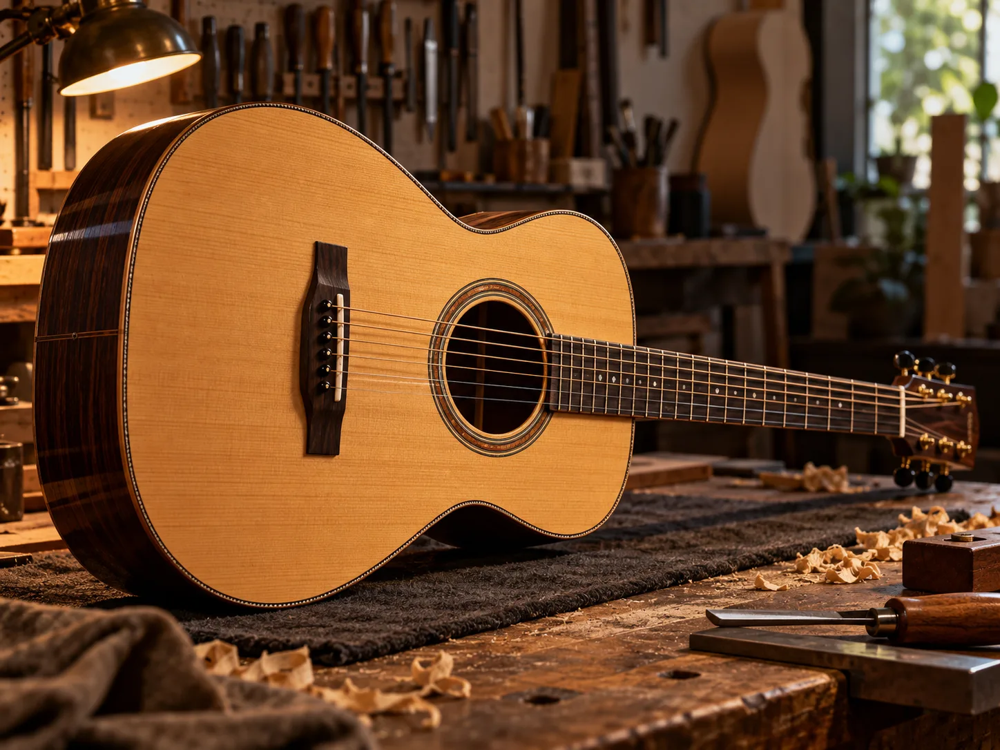

Antes da nota, existe a escolha.
Um bom instrumento começa na escuta. A forma, o toque e o acabamento transformam uma peça em companhia de longa duração. Esta narrativa é um conceito para um ateliê fictício; materiais e processos seriam definidos com o luthier real.

Os detalhes também têm voz.
Uma experiência para investigar partes e escolhas antes da conversa com o ateliê. As texturas e o instrumento abaixo são ilustrações conceituais, não especificações de um produto.
O tampo aproxima o olhar.
A página pode revelar textura, contorno e processo por meio de fotografia real, macrodetalhes e orientação do luthier.
Qual madeira combina com sua história?
Uma amostra de como o catálogo pode convidar à descoberta. Toque em um acabamento para mudar a peça.
Acabamentos
Mel selecionado. Visualização ilustrativa de acabamento; não representa estoque ou configuração à venda.
Uma presença digital que dá para sentir.
Conceito fictício criado para mostrar possibilidades de narrativa, catálogo e contato para luthierias e marcas musicais.
Conhecer a ServAgency